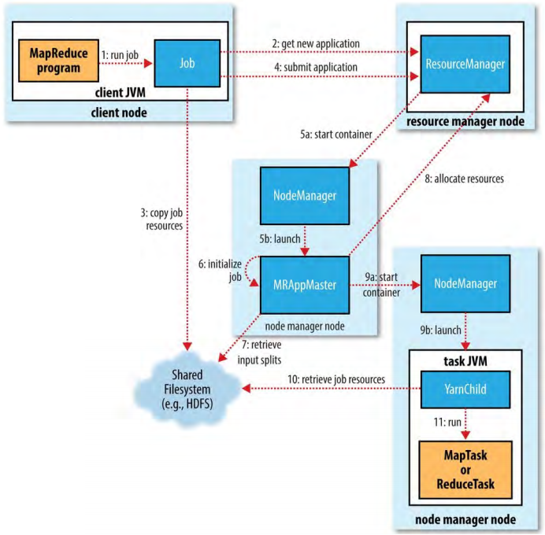
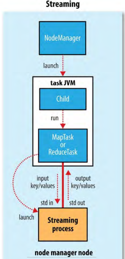
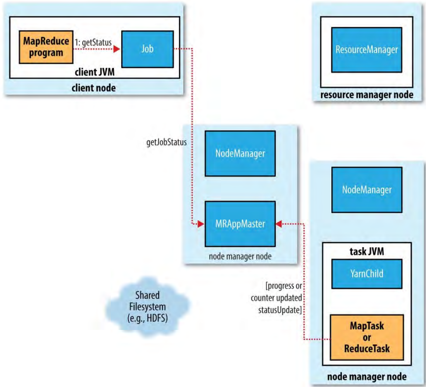

1、MapReduce Job运行剖析(Anatomy of a MapReduce Job Run)
图 7-1. How Hadoop runs a MapReudce job

MapReduce运行相关的5个实体：
- 客户端，提交MapReduce job；
- YARN资源管理器，协调集群运算资源的分配
- YARN节点管理器，启动和监控集群中机器上的运算容器
- MapReduce application master，协调运行MapReduce job的tasks。application master和运行在容器中的MapReduce tasks被资源管理器调度并且被节点管理器管理；
- 分布式文件系统（通常是HDFS），和其它实体分析job文件。
1.1、Job提交（Job Submission）
Job的submit()方法创建一个内部的JobSubmitter实例并调用它的submitJobInternal()方法（图7-1 step 1）。提交完job后，waitForCompletion()每秒轮询job的进度并把当进度和上次相比发生变化时把进度汇报到控制台。当job成功结束，显示job counters。否则，在控制台打印导致job失败的错误。
JobSubmitter实现的job提交处理，作了如下操作：
- 向资源管理器请求一个新的application ID，用作MapReduce job ID（step 2）。
- 检验job的输出设定。例如，如果输出目录为指定或者已经存在，job不会被提交并且向MapReduce程序抛出错误。
- 计算job的输入分片（input splits）。如果不能计算分片（比如，因为输入路径不存在），job不会被提交并且向MapReduce程序抛出错误。
- 把运行job需要的资源（包括job JAR文件，配置文件，计算过的输入分片）复制到共享文件系统（shared filesystem）中以job ID命名的目录中（step 3）。job JAR用高备份因子（mapredue.client.submit.file.replication属性控制，默认值为10）复制以便集群中有很多的备份来让节点管理器在运行job的tasks时访问。
- 通过调用资源管理器的submitApplication()方法提交job（step 4）。
1.2、Job初始化（Job Initialization）
当资源管理器收到对它的submitApplication()方法的调用，它把这个请求转交到YARN调度器。调度器分配一个容器（step 5a），然后资源管理器在节点管理器的管理下在那里启动application master进程（step 5b）。
application master对于MapReduce Jobs来说是一个Java应用，它的main class是MRAppMaster。它初始化job，创建一些记账对象（bookkeeping objects）保持追踪job的进度，并且它会从tasks获取进度和完成报告（step 6）。接下来，它从共享文件系统获取客户端中计算的输入分片（step 7）。然后为每个分片创建一个map task，并根据mapreduce.job.reduces属性（通过Job的setNumReduceTasks()方法设置）创建reduce tasks对象。同时分配task IDs。
application master必须决定如何运行组成MapReduce job的tasks。如果job很小，application master可能会选择在他自己所在的JVM中运行tasks。当application master判断分配新容器和在新容器运行tasks的开销（和让它们在一个节点串行执行）超过让它们并行运行的受益。这种job被称作uberized（超级），或运行作uber task。
默认情况下，小job是少于10个mappers只有一个reducers，并且输入数据大小小于一个HDFS block。（对于某个job通过设置mapreduce.job.ubertask.maxmaps，mapreduce.job.ubertask.maxreduces，mapreduce.job.ubertask.maxbytes这些值可以改变。）必须通过设置mapreduce.job.ubertask.enable为true来明确地开启uber task。
最终，在运行tasks之前，application master调用OutputCommitter的setupJob()方法。对于FileOutputCommitter，默认情况下，它会为job创建最终的输出目录和task输出的临时工作空间。
1.3、Task分配（Task Assignment）
如果job不符合作为uber task运行，application master会为job中的所有map和reduce tasks从资源管理器请求容器（step 8）。为map tasks进行的请求首先进行并且比为reduce tasks发出的请求优先级高，因为所有的map tasks必须在reduce的sort阶段开始前完成。只有在5%的map tasks已经完成的时候，才会为reduce tasks进行请求。
reduce tasks可以在集群的任何地方运行，但是为map tasks进行的请求，调度器会尝试兑现数据本地性限制。在最佳情况下，task是 data local的，即在输入分片所在的同一个节点上运行。或者，task是rack local的：与输入分片在同一个机架上的不同节点。有些tasks既不是本地节点也不是本地机架，而是从与他所在节点的不同机架获取输入数据。对于某个特定的job，可以通过查看job的counters（表 9-6）来确定每个本地性层级的tasks的数量。
请求也为tasks指定需要的内存和CPUs。默认情况下，每个map和reduce task被分配1024M内存和一个虚拟核心。这些值（服从于Memory settings in YARN and MapReduce章节描述的最大、最小值）可以通过每个job的下列属性配置：mapreduce.map.memory.mb，mapreduce.reduce.memory.mb，mapreduce.map.cpu.vcores和mapreduce.reduce.cpu.vcores。
1.4、Task执行（Task Execution）
一旦资源管理器的调度器在某个特定节点为task分配了容器资源，application master会联系节点管理器启动容器（step 9a和9b）。一个main class为YarnChild的Java应用会来执行task，在运行task之前，它将task运行需要的资源（包括job 配置文件、JAR文件、分布式缓存的所有文件）本地化（step 10），然后，运行task或reduce task（step 11）。
YarnChild应用在专用JVM中运行，这样用户的map和reduce功能（甚至YarnChild）中的任何bugs都不会影响节点管理器（导致它崩溃或挂起）。
每个task都可以执行setup和commit行为，这些行为都在与task相同的JVM中运行，并且都由OutputCommitter为job决定。对于基于文件（file-based）的jobs，commit行为把task输出从一个临时的位置移动到它的最终位置。commit协议保证，在开启推测执行（speculative execution）时，重复tasks中只有一个会被committed，其他的会被放弃。
1.4.1、流（Streaming）
流运行着特别的（special）map和reduce tasks，为了启动用户提供的可执行文件并和它交流的目的（图 7-2）。
图 7-2 The relationship of the Streaming executable to the node manager and the task container

流task用标准输入流和标准输出流和进程（可能是任何语言写的）通信。在task执行中，Java进程传递输入键值对到外部进程，通过用户定义的map或reduce函数（function）运行这个外部进程，并传递输出键值对到Java进程。从节点管理器的观点来看，就像是子进程自己运行了map或reduce代码。
1.5、进度和状态更新（Progress and Status Updates）
MapReduce jobs是长时间运行的批jobs（long-running batch jobs），要运行几十秒到数小时。Job和它的tasks都有一个status，它包含job或task的状态（running，successfully，completed，failed等）、maps和reduces的进度、job的counters的值、和状态信息或者描述（可能通过用户代码设置）。
task运行时，它保持追踪它的progress（例如，task已经完成的比例）。对map tasks来说，这是已经处理的输入的比例。对reduce tasks来说，有点复杂，但是系统仍然可以估计已经处理的reduce输入的比例，通过把整个进度分为3部分（对应于混洗的三个阶段）来计算这个比例。例如，如果task的reducer已经处理了一半reducer输入，task的进度是5/6，因为它完成了copy和sort阶段（每个1/3）并完成了reduce阶段的一半（1/6）。
进度并不总是可以衡量的，但是，它告诉Hadoop一个task在做些什么。例如，一个task正在写输出记录，但是不知道它已经写了总记录量的比例。进度很重要，因为Hadoop不会把正在进行的task结束（fail）掉。以下操作都构成了进度：
- 读取输入记录（在mapper或reducer中）
- 写输出记录（在mapper或reducer中）
- 设置状态描述（通过Reporter或TaskAttemptContext的setStatus()方法）
- 增加counter（使用Reporter的incrCounter()或Counter的increment()方法）
- 调用Reporter或TaskAttemptContext的progress()方法
tasks有一系列的counters用于计数task运行中不同事件，counters是内置到框架的（例如map输出记录数量）或者用户定义的。
map或reducetask运行时，子进程通过umbilical(脐带)接口和它的父applicaiton master通信。task报告它的进度和状态（包括counters）到它的application master，application master通过umbilical接口每3秒钟聚合一次job的状态。
资源管理器web UI展示所有的运行中应用，带有它们各自application master的web UI的链接，分别展示MapReduce job相关的详情，包括它的进度。
在job执行过程中，client通过每秒钟（这个时间间隔可以通过mapreduce.client.progressmonitor.pollinterval设置）轮询application master来获取最新的状态。客户端也可以使用Job的getStatus()方法来获取JobStatus实例，这个实例包含了job的所有状态信息。
图 7-3 How status updates are propagated through the MapReduce system.

1.6、Job完成（Job Completion）
当application master收到job的最后一个task完成的通知，它把job的状态改为“successful”。然后，当Job轮询状态时，它就会知道job已经成功完成，它打印一条消息告诉用户并且从waitForCompletion()方法返回。同时，Job统计数据和counters打印到控制台。
通过属性mapreduce.job.end-notification.url可以配置一个HTTP URL，application master会向这个URL发送job完成通知。
最终，job完成时，application master和task容器清空它们的工作状态（删除中间输出），并且调用OutputCommitter的commitJob()方法。job history server会获取job的信息以便用户日后的查询。
2、失败（Failures）
实际运行中，有用户代码漏洞、进程崩溃、机器异常。使用Hadoop的一大益处是它能够处理这些失败，并让job成功完成。需要考虑到如下几种实体的失败：task、application master、节点管理器、资源管理器。
2.1、task失败（Task Failure）
task的最常见失败是map或reduce task中用户代码抛出运行时异常。如果发生，task JVM在退出前会将错误报告给它的父application master。错误最终记录到用户日志。application master把task attempt标记为failed，并释放容器的资源以便其它task使用。
对于流tasks，如果流处理非零退出，它会被标记为失败。这个行为由stream.non.zero.exit.is.failure属性（默认值ture）控制。
另一种失败模式是task JVM突然退出——可能是因为用户代码构成的特定环境导致JVM bug引起JVM退出。这种情况下，节点管理器注意到进程退出并通知application master，这样application master可以把这个attempt标记为失败。
挂起tasks的处理不同。application master注意到一定时间（默认10分钟，通过设置属性mapreduce.task.timeout为毫秒，可以为单个job或一个集群设置超时时间）没有收到task的进度更新进而把task标记为失败。之后，task JVM继承会被自动杀死。设置超时时间为0，则关闭超时检测，长时间运行的tasks就不会被标记为失败。这种情况下，挂起的task不会释放它的容器，随着时间推移，可能会导致集群关闭。应该避免这种设置，确保task定期报告进度就足够了。
application master被通知task attempt失败后，它会重新调度task执行。application master会避免在task之前失败的节点上重新运行task。此外，如果task失败4次（attempts最大次数，可配置，对于map tasks是mapreduce.map.maxattempts属性，对于reduce tasks是mapreduce.reduce.maxattempts），就不会再次运行，整个job失败。
对某些应用，可能不希望task失败时放弃job，因为可能可以忽略某些tasks失败而使用job的结果。这种情况下，可以设置不触发job失败而允许tasks失败的比例。对于map tasks是mapreduce.map.failures.maxpercent，对于reduce tasks是mapreduce.reduce.failures.maxpercent。
task attempt被killed不同于失败。task attempt可能被杀死，因为推测重复，或者它运行的节点管理器失败application master标记它上面运行的所有task attempts为killed。被杀死的task attempts不会被计入运行task的attempts数量（mapreduce.map.maxattempts和mapreduce.reduce.maxattempts），因为task attempt被杀死不是task的错。
用户可以通过web UI或命令行（输入mapred job命令查看选项）标记task attempt为killed或failed。job也可以通过同样的机制杀死。
2.2、application master失败（Application Master Failure）
如同MapReduce tasks可以被允许通过一些重试来获取成功执行，YARN中的应用失败时也重试。运行MapReduce application master的最大重试次数由mapreduce.am.max-attempts属性控制，默认值2。
YARN为集群中运行的所有的YARN application master执行一个最大尝试次数限制，单个应用不会超过这个限制。这个限制通过yarn.resourcemanager.am.max-attempts属性设置，默认值2，所以，如果要增加MapReduce application master attempts次数，就必须增加YARN的这个设置。
恢复工作如下。application master向资源管理器发送心跳检测，application master失败时，资源管理器能够检测到失败并（在节点管理器的管理下）在新的容器中启动一个新的application master实例。对于application master来说，它会使用job history来恢复已经执行的tasks的状态，这样就不会重新运行这些tasks。恢复行为是默认开启的，但是可以通过设置yarn.app.mapreduce.am.job.recovery.enable为false关闭。
MapReduce客户端轮询application master来获取进度报告，如果application master失败，客户端需要定位新的application master实例。在job初始化过程中，客户端请求资源管理器获取application master的地址，然后将它缓存这样在需要轮询application master的时候就不用重复的向资源管理器发送请求。在application master失败时，客户端也会向资源管理器请求新的application master的地址。这个过程对用户是透明的。
2.3、节点管理器失败（Node Manager Failure）
如果节点管理器因为崩溃或者运行太慢而失败，它就会停止向资源管理器发送心跳检测（或者发送很稀少）。资源管理器会注意到停止发送心跳检测的节点管理器，如果它超过10分钟（可配置，毫秒，通过属性yarn.resourcemanager.nm.liveness-monitor.expiry-interval-ms）没有收到节点管理器的心跳检测，资源管理器会将这个节点管理器从它的用于调度容器的节点的池子（pool of nodes to schedule containers on）中移除。
运行在失败节点管理器上的task或者application master会通过之前描述的机制恢复。另外，application master会安排在失败节点管理器上已经运行过并成功完成的map tasks重新运行，如果这些任务属于未完成的job，因为它们保存在失败的节点管理器的本地文件系统中的中间输出可能对于reduce tasks无法访问。
如果节点管理器上面某个job的tasks失败数很高，它可能会被blacklisted，即使它没有失败。加入黑名单是application master执行的，对于MapReduce来说，如果一个节点管理器上超过3个（通过属性mapreduce.job.maxtaskfailures.per.tracker可以改变这个值）tasks失败，application master会在不同的节点上重新调度tasks。注意，资源管理器不会跨应用执行加入黑名单，所以新的jobs的tasks会被调度在坏的节点上运行，即使这些节点被运行之前job的application master拉黑。
2.4、资源管理器失败（Resource Manager Failure）
资源管理器失败很严重，因为没有它，jobs、task容器都不能启动。在默认配置下，资源是单点故障，因为机器故障时，所有的jobs都失败并且不能恢复。
为了获取高可用（HA），在活跃备用（active-standby）配置中运行一些资源管理器很必要。如果活跃资源管理器故障，备用的可以在客户端不明显察觉的情况下接替。
所有运行中的应用的信息都保存在一个高可用的状态存储（state store，由ZooKeeper或HDFS备份）中，以便备用资源管理器可以恢复故障活跃资源管理器的核心状态。节点管理器信息不保存在状态存储中，因为在节点管理器发送第一次心跳检测的时候，新的资源管理器可以相对很快地重构这些信息。（注意，tasks不是资源管理器信息的一部分，因为它们是由application master管理的。这样，与MapReduce 1中的jobtracker相比保存的状态的量更加可管理。）
当新的资源管理器启动，它从状态存储中读取应用信息，然后为运行在集群上的所有应用重启application master。这不会被算作应用attempt失败（所以，不计入yarn.resourcemanager.am.max-attempts），因为引用没有因为应用中代码的原因而失败，只是被系统强制杀死。事实上，application master重启不是MapReduce应用的议题，因为它们恢复（基于）完成的tasks做的工作。
资源管理器从备用到活跃的转移由故障转移控制器（failover controller）处理。默认的故障转移控制器是自动的，它使用ZooKeeper leader elcetion来确保同时只有一个活跃的资源管理器。与HDFS高可用不同，这个故障转移控制器不必是一个standalone进程，为了便于配置它是默认嵌入资源管理器的。也可以配置手动故障转移，但是不推荐。
客户端和节点管理器也必须被配置来处理资源管理器故障转移，因为可能有两个可以通信的资源管理器。它们会以循环（round-robin）的风格尝试每个资源管理器直到发现可用的。如果活跃的故障，它们会不断重试连接直到备用的变为活跃的。